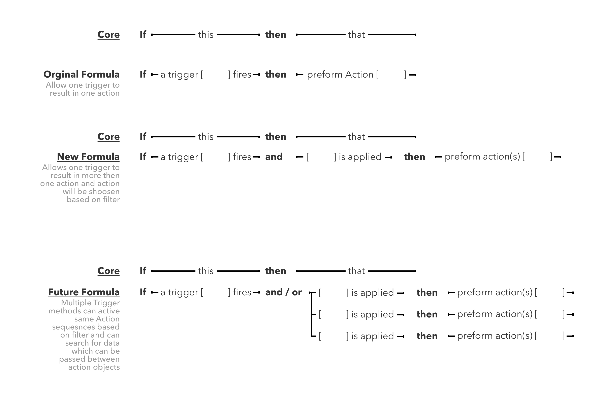

In June of 2017 I lead user research phase to determine the viability for a new product called Maker Platform. Established and managed the first community of makers who used IFTTT. Documented and developed case studies to determine how IFTTT’s products could evolve to better match the demand of IOT and affiliated systems. Included is a selected set of work.
Intro
During my two month contract with IFTTT I worked with the Platform team and Marketing team to research a new tool which was being released to makers called the Maker Platform. The tools was a variant of what was offered to IFTTT partners like Nest, Microsoft, etc. with a few modifications. The goal was to research the product with an alpha and beta testing community as it was in active development.
Research
During the research phase I conducted research interviews to determine how makers, individuals who created their own Applets on ifttt.com, currently used the platform and what we could do to allow them to make even more awesome Applets. After interviewing participants over a course of a few weeks I created a research readout to act as a summary of findings form internal and external user research, secondary research, FullStory sessions, and ongoing community engagement with the Maker Platform Beta. Below I have included selected assets from the research.
Landscape of Content Producer Profiles

Evolution of IFTTT FORMULA
Many alternatives to IFTTT have focused on features as IFTTT has focused on building a network of services users love. This particular project focused on providing and building some of “expected features” back into the IFTTT platform. There was a need to highlight the evolution of the IFTTT formula as part of the research identified a need to contextualize where the IF This Then That formula started and where it is going in order to understand the needed infrastructure to support users.

Anatomy of an Applet
Applets can be thought of in four levels of complexity and three ways of manipulation.

Layer One - Summary of the function of the Applet
Layer Two - Summary of the function and the state of the Applet
Layer Three - Selector for customizations and notifications
Layer Four - Composition layer where you can create Applets using Triggers, Filters, and Actions
Build
Phase two focused on building out the next version of the Maker platform. This was broken into building out the documentation for the new Applet Composer, a Maker community and a new Maker profile.
Maker Community Page


Maker Documentation


Future Explorations
I dedicated part of my time to mapping out possible topics for future build sprints at IFTTT in order to diversify the way employees think about the potential of what IFTTT could become:
- Creating a chatbot interface for IFTTT and its partner services.
- IFTTT as an OAuth authenticator for non-screen based devices.
- IFTTT as the operating system for your home.